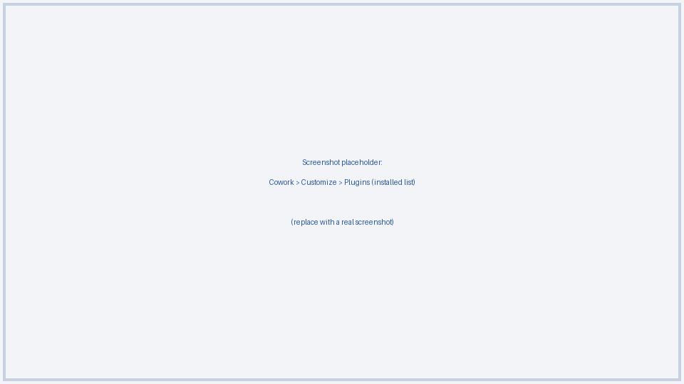
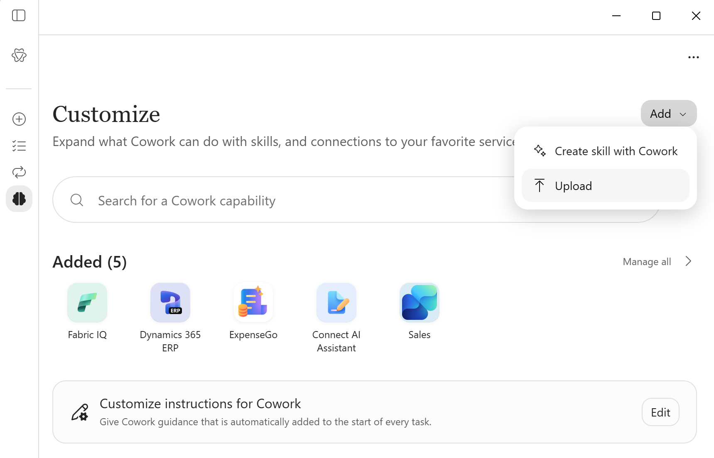
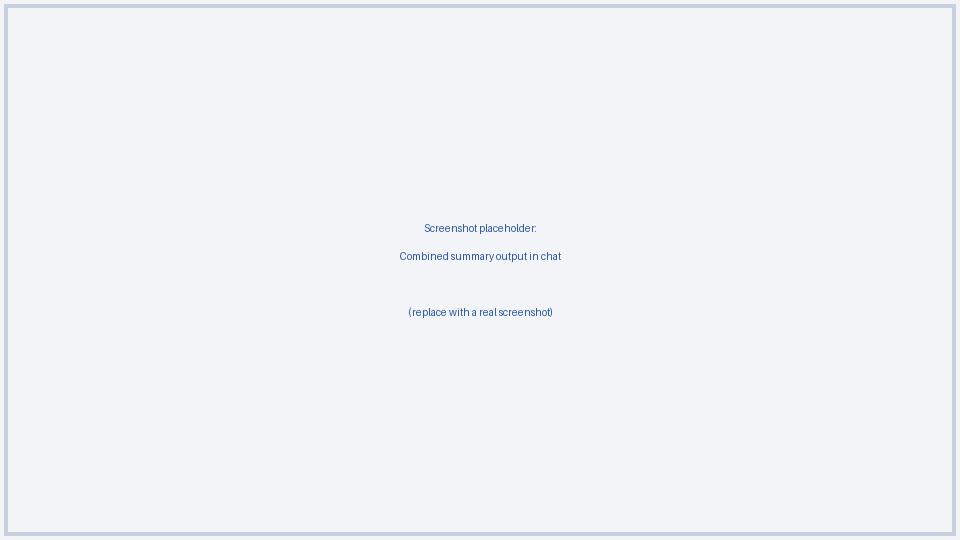

CSM Advisor
One combined summary across Word, PDF, text, PowerPoint, and Excel files - a plugin for Microsoft Copilot Cowork.
Overview
Point CSM Advisor at a mixed batch of files - .docx, .pdf,
.txt, .pptx, .xlsx/.xls - and it reads all
of them and returns a single consolidated summary: cross-file themes, per-file highlights,
gaps/overlaps, and a suggested learning path. It never produces a separate summary per file.

Install
-
Download the latest release ZIP from
GitHub Releases,
or build it yourself from source:
This produces
./scripts/package.ps1dist/CSM-advisor.zip. - Open Cowork > Customize > Plugins > Add plugin.
-
Select choose a file and pick
CSM-advisor.zip, or drag and drop it into the dialog.
Cowork's Add Plugin dialog. - Follow the on-screen installation and consent steps.
- Confirm CSM Advisor appears in the installed plugins list.
Tenant policy must permit plugin installation. If installation is blocked, contact your administrator - this package does not bypass any policy.
Verify
Start a new Cowork conversation and try the prompt below:
Summarize these files into one combined summary using CSM Advisor: <attach/select 2+ files
in Word, PDF, text, PowerPoint, and/or Excel format>.
Confirm the response follows the structure in SUMMARY-TEMPLATE.md.
Update
- Make changes under
skills/csm-advisor/. -
Bump
versioninmanifest.jsonandmetadata.versioninSKILL.md. -
Re-run the packaging script to produce a new ZIP:
./scripts/package.ps1 - In Cowork, open Customize > Plugins, select CSM Advisor, and upload the new ZIP to update it in place.
Keep the same id (GUID) in manifest.json across updates so Cowork
treats it as an update to the existing plugin rather than a new installation.